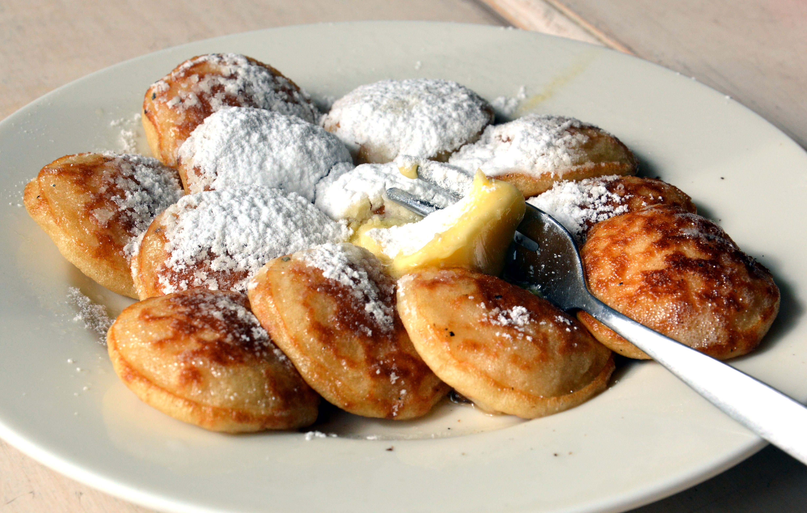

Home
Poffertjes

Description
Poffertjes are traditional Dutch batter cakes. Resembling small, fluffy pancakes, they are made with yeast and flour. Typically, poffertjes are sweet treats served with powdered sugar and butter, and sometimes syrup or advocaat. A savoury variant with gouda cheese is also made.
Ingredients
- All-purpose flour
- Buckwheat flour
- Lukewarm whole milk (35–40 °C)
- Eggs
- Instant dry yeast
- Sugar
- Salt
- Butter
- Powdered sugar
Steps
- Proof the yeast: Warm the milk until lukewarm (~35–40 °C — hot enough to feel warm, not hot, or it'll kill the yeast). Stir in the yeast and let sit ~5–10 minutes until frothy.
- Mix the batter: Whisk the all-purpose flour, buckwheat flour, sugar, and salt in a large bowl. Add the egg and the milk-yeast mixture, whisking until smooth and thick (thicker than crepe batter, but still pourable). Don't overmix.
- Let it rise: Cover the bowl with a clean towel and leave in a warm, draft-free spot for about 1 hour, until the batter has roughly doubled and looks bubbly on top. (30 minutes works in a pinch, but an hour gives better flavor.)
- Heat and grease the pan: Set a poffertjes pan (or aebleskiver pan) over medium heat for 3–4 minutes. Brush each well with a little melted butter — it should sizzle gently, not smoke.
- Fill the wells: Spoon or pipe batter into each well, filling them about ¾ full (leave room to rise).
- Cook and flip: Cook 1–2 minutes until the bottoms are golden and bubbles form on top. Slip a wooden skewer under each poffertje and flip it, then cook 1–2 more minutes until golden on both sides and set in the center.
- Serve: Re-butter the wells between batches. Serve warm with a small pat of butter and a dusting of powdered sugar.